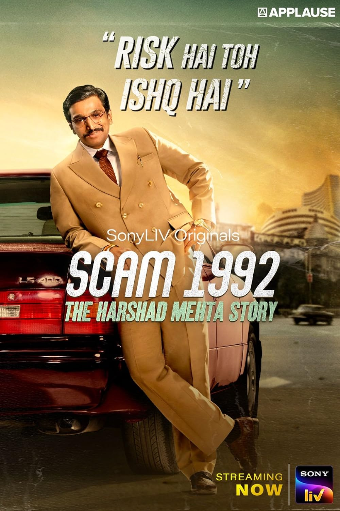

THE BLOGGING COMPANY
Web-Series
The Scared games

Action carime drama
Episodes : 16
Creator : Varun Grover
Star : Saif Ali KhanNawazuddin, SiddiquiNeeraj Kabi
Streaming Partner : Netflix
watch Here : click Here
Sacred Games is Netflix' first Indian original series. Its episode titles were inspired by Hindu mythology. The first episode, "Aswatthama", was based on the namesake character from the Mahabharata who was cursed with immortality by Krishna after the Kurukshetra War.
Mirzapur

Action Crime Drama
Episode : 29
Creator : Puneet Krishna, Karan Anshman
Stars : Rasika Dugal, Pankaj Tripathi, Ali Fazal
Streaming Partner : Amazon Prime Video
watch Here : Click Here
Politicians, cops, lawyers, and mafia lords are involved in a complex web of relationships and rivalries. Akhandanand Tripathi, also known as 'Kaleen Bhaiya', is a millionaire carpet exporter and the don of the city of Mirzapur, which lies in the hinterland, a lawless belt of Purvanchal in eastern India.
The Scam:1992 The Harshad Mehta Story
Biography Crime Action
Episode : 10
Stars : Pratik GandhiShreya DhanwantharyHemant Kher
Streaming Partner : SonyLiv
watch Here : ClickHere
Set in early 90's Bombay, Scam 1992: The Harshad Mehta Story captures the meteoric rise and fall of Harshad Mehta- the flamboyant big bull of the stock market. When feisty financial journalist Sucheta Dalal exposed him as the man behind India's biggest financial scam of the time, it shook the nation.
The Family Man

Action Crime Drama
Episodes : 10
Creators : Deepesh Sumitra JagdishArunabh KumarShreyansh Pandey
Stars : Stars :Naveen KasturiaShivankit Singh PariharAbhilash Thapliyal
Streaming partner : Amazon Prime Video
watch Here : Click Here
A working man from the National Investigation Agency tries to protect the nation from terrorism, but he also needs to keep his family safe from his secret job. 'The Family Man' is an edgy action-drama series which tells the story of a middle-class man who works for a special cell of the National Investigation Agency.
Aspriants

Crime Drama Mystry
Episodes : 10
Stars : Vikrant MasseyPankaj TripathiRucha Inamdar
Streaming Partner : Amazon Prime Video
Watch Here : Click Here
Aspirants is a story of 3 friends - Abhilash, Shwetketu(SK) and Guri. The story revolves around the past and the present time where the past captures the struggle and the drama behind the making of UPSC CSE aspirants in Old Rajinder Nagar of Delhi, while the present talks about the aftermath.